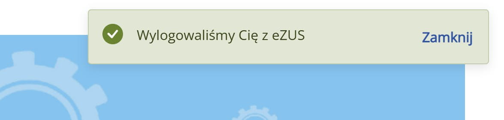
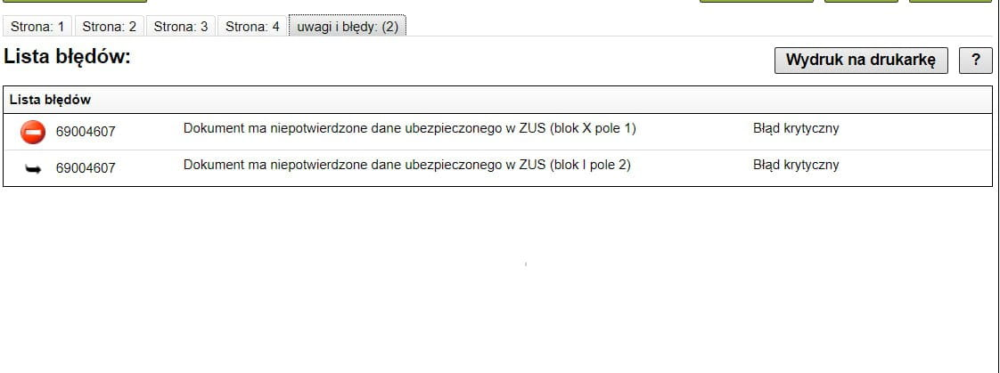
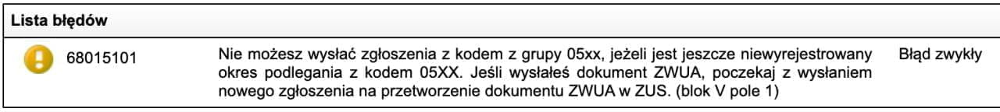
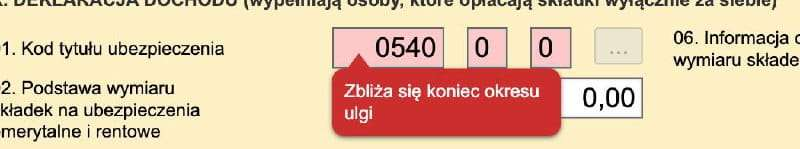
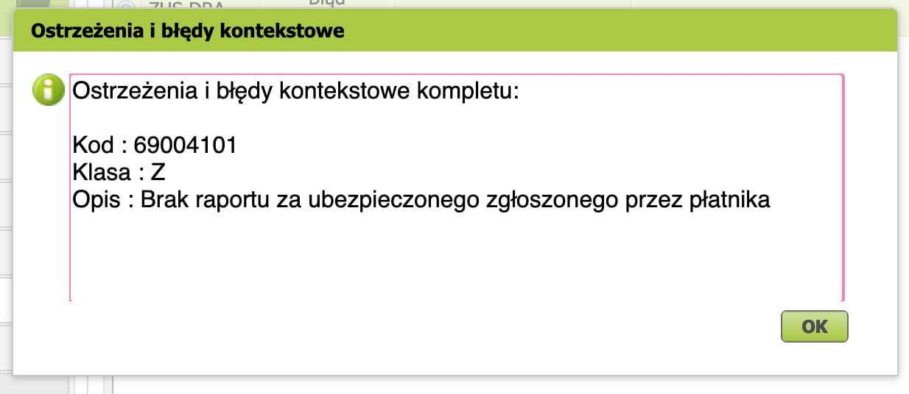

Типичные ошибки ZUS¶
Связанные со входом¶
Login
Сайт zus.pl не логинит в кабинет! Зависает на Logowanie... или выбрасывает на страницу логина: 
Попробуйте следующие решения:
- Почистить куки (Как удалить cookies для сайта zus?).
- Войти в ZUS используя другой браузер.
- Войти в ZUS через анонимную вкладку (Как использовать режим инкогнито в Google Chrome?).
- У меня ZUS зависает на экране загрузки, но если вернуться к предыдущей странице https://www.zus.pl/ezus/ и попробовать войти снова, то получится залогиниться в ZUS.
- Подождать. В eZUS иногда случаются технические проблемы и ничего с этим не поделаешь.
Связанные с переходом между режимами¶
| ⚠️ Что делать если пропустил сроки перехода на składki preferencyjne? |
|---|
| Если предприниматель не уложится в 7-дневный срок, то нет никаких препятствий, чтобы сделать это позже. Сделайте это сейчас, как можно скорее. Следует помнить, что несоблюдение установленного законом срока подачи отчётности является нарушением положений Закона о системе социального страхования (ustawy o systemie ubezpieczeń społecznych) и карается штрафом. (Источник) |
| ⚠️ Особенность процедуры для пользователей wFirma |
|---|
| Чтобы избежать проблем с переходом в wFirma, следует сначала отправить ZUS DRA за шестой месяц ulga na start и только после этого выполнять переход. Это соответствует алгоритму в гайде. |
При верификации формы ZUS ищите результат на вкладке uwagi i błędy. Скриншот для наглядности:  Давайте вместе собирать самые распространённые ошибки и их решения на этой странице!
68015101¶
Если вы отправили ZUS ZUA до обработки ZUS ZWUA, то можете видеть ошибку вроде такой: 
Текст ошибки:
Nie możesz wysłać zgłoszenia z kodem z grupy 05xx, jeżeli jest jeszcze niewyrejstrowany okres podlegania z kodem 05XX. Jeśli wysłałeś dokument ZWUA, poczekaj z wysłaniem nowego zgłoszenia na przetworzenie dokumentu ZWUA w ZUS. (blok V pole 1) Błąd zwykły
Тут написано, что нужно подождать, пока обработается ZUS ZWUA. Но вообще-то можно не ждать и отправить с ошибкой. Декларация всё равно обработается корректно.
69012001¶

Вероятно, при верификации декларации ZUS DRA за последний месяц действия Ulgi na Start на вкладке uwagi i błędy вы увидите статус «Informacja» и сообщение «Zbliża się koniec okresu ulgi (blok X pole 1)». Это нормальная ситуация — ZUS просто информирует, что льготный период заканчивается и нужно готовиться к переходу на следующий режим.
Info
Это не блокирующая ошибка: ничего исправлять не нужно, декларацию можно спокойно отправлять и оплачивать.
69004101¶
При верификации декларации ZUS DRA за последний месяц действия Ulgi na Start вы видите сообщение «dla ubezpieczonego brak zgłoszenia z podanym kodem tytułu».

На вкладке uwagi i błędy есть ошибка с кодом 69004101 и текстом «brak raportu za ubezpieczonego zgłoszonego przez płatnika». 
Ошибка указывает на расхождение между кодом страхования, который вы сообщили в ZUS, и кодом страхования, указанным на декларации ZUS DRA.
возможная причина проблемы
Такое может быть, например, если предприниматель в начале октября уже успел перейти на skladki preferencyjne (в том числе и настройки wFirma переключил), но прошлый месяц ещё по ульге должен быть.
решение
Попробуйте такое решение:
- Удалите неправильный ZUS DRA в wFirma;
- Смените в настройках wFirma обратно на льготу Ulga na Start;
- Сгенерируйте заново ZUS DRA;
- После успешной отправки DRA в ZUS снова смените настройки на преференцийный зус.
wFirma не хранит историю изменений параметров в настройках, к сожалению.
Источник: сообщение от Oksana Sviderska
Прочие¶
Если вы столкнулись с ошибкой, которая пока не задокументирована, или предложенные решения не работают, задайте вопрос непосредственно зусу или в чате ИП в Польше.
Как задать вопрос правильно?
Укажите в своём вопросе всю важную информацию, всё, что уместно и что по вашему мнению имеет значение. Администрация чата подготовила для вас чеклист. Если затрудняетесь с ответом на какие-то из вопросов, то так и скажите — вам помогут другие участники чата.
- Что вы пытаетесь сделать?
- Какую форму для этого заполняете?
- На каком шаге возникает вопрос / проблема / ошибка?
- Текст ошибки на польском языке.
- Код ошибки. При верификации формы ZUS ищите результат на вкладке uwagi i błędy.
- Скриншот ошибки и скриншот шага (шагов), который предшествует ошибке
- Какие-то возможные решения вы уже пробовали самостоятельно?
- форма налогообложения? возможные варианты ответа:
- ryczałt - рычалт
- podatek liniowy - линейный налог 19%
- skala podatkowa или opodatkowanie na zasadach ogólnych - налогообложение по общей системе 0 / 12% / 32%
- когда был первый день ведения деятельности? ДАТА.
- совмещаете ли предпринимательскую деятельность и работу в найме? (примечание: часть взносов платит работодатель. вопрос про работу по umowa o pracę или umowa zlecenie)
- являетесь пенсионером или инвалидом?
- ежемесячные взносы рассчитываете на основе дохода текущего года или предыдущего?
- какими льготами пользуетесь? возможные варианты ответа:
- Ulga na Start (первые 6 месяцев);
- Składki Preferencyjne (следующие 24 месяца);
- Mały ZUS+ (доход до 120 000 zł);
- Wakacje składkowe (каникулы 1 месяц от ZUS);
- Duży ZUS - полный зус, никаких льгот.
Проверить можно следующим образом
Зайдите в ZUS - Ubezpieczony - и посмотрите код страхования.
-
давали ли вы согласие на оплату больничных взносов (składka chorobowa)?
Проверить можно следующим образом
Зайдите в ZUS - ePłatnik - Dokumenty w ZUS и найдите там последнюю ZUS ZUA. Если в ZUS ZUA была отмечена галочка składki chorobowe (блок VIII поле 05), значит вы подписались на эти добровольные дополнительные взносы.
-
(для рычалта) годовой доход попадает в диапазон: до 60000 zł, от 60000 zł до 300000 zł, свыше 300000 zł. Уточните, про какой год отвечаете, или напишите доход за предыдущий и за текущий год.
- сбросьте в чат скриншот настроек ZUS того сервиса, которым пользуетесь для бухгалтерии (inFakt, wFirma, iFirma).
- если вы не регистрировались как ИП, ведёте działalność nierejestrowa, то тоже обязательно укажите это в своём вопросе.
- Получили письмо из ЗУС? Что там написано?
- Получили ответ из ЗУС? А как был сформулирован ваш вопрос?